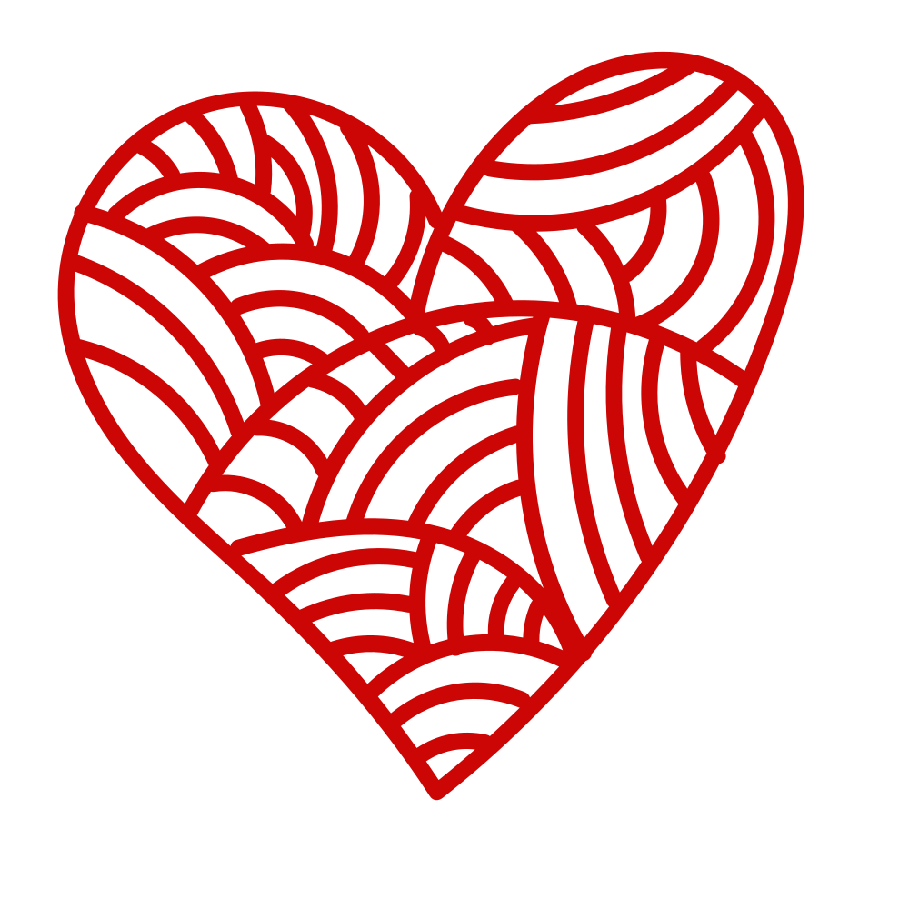
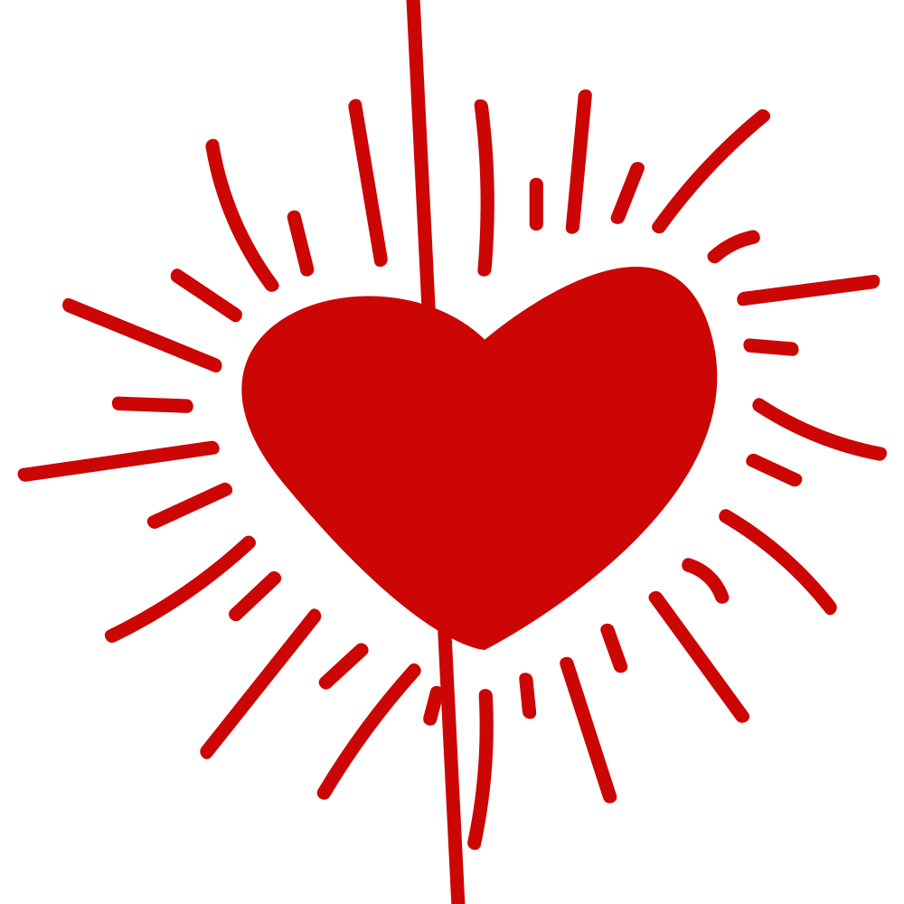

Ceylin & Emre'nin MasalıBizim Sevgi Dolu C&E'nin Günlüğü
"Seninle başlayan bu masal, hayatımızın en değerli hediyesi. Ceylin & Emre'nin her anı aşkla yazılan ortak hikayesi..."

C&E Anı Defteri
Pembe çizgili sayfalarında her günümüzü, paylaştığımız tatlı anları el ele yazdığımız özel defterimiz...
Özel Hatıra Notlarımız
Aşkımızın dönüm noktaları ve unutulmaz anları
Fotoğraf Albümümüz
Zamanı durdurduğumuz, gülümsemelerimizin birbirine karıştığı en tatlı anılarımız...
Aşk Tuvalimiz
Birbirimize tatlı notlar, kalpler ve resimler çizelim...
Mektubum & Melodimiz
Sözcüklerin yetmediği yerde müziğin ve aşk mektubunun fısıltısı...
C&E'ye Özel Aşk Mektubu
Kırmızı balmumu mührü kırmak ve kalpten dökülen sözleri okumak için tıkla...
Ay Tenli Kadın
Ufuk Beydemir • C&E'nin Şarkısı
Bizim Dileklerimiz
El ele verip gerçekleştireceğimiz, ömür boyu saklayacağımız ortak hayallerimiz... ↔️ Silmek için sağa veya sola kaydırabilirsiniz
-
SilSilFransa'ya gitmek 🇫🇷
-
SilSilİtalya'ya gitmek 🇮🇹
-
SilSilKuzey Işıklarını birlikte izlemek
-
SilSilBirlikte doğada kamp yapmak
-
SilSilİngiltere'ye gitmek 🇬🇧